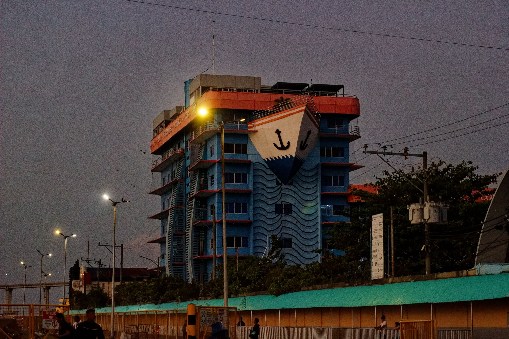

Photography Archive
Photograph — Gallery in orbit.
A photo collection by Chel Gadores. Thirteen observations of light, place, texture, and the quiet details that ask to be remembered.

Frame 01 Light study 13 frames General Santos CityArchive / 01
Collected frames.
Browse the complete photography archive, filter by orientation, and open any frame for a distraction-free view.